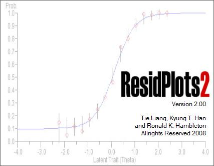
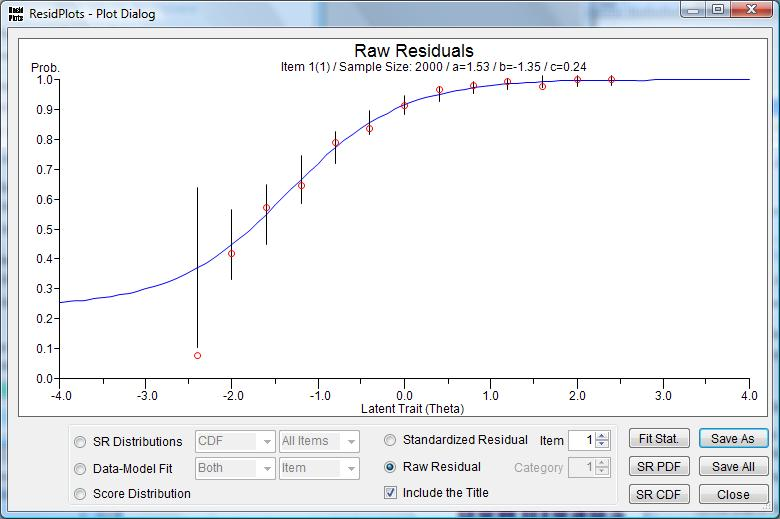

 |
ResidPlots-2: Computer Software for IRT Graphical Residual Analyses Version 2.0 |
Tie Liang, Kyung (Chris) T. Han, and Ronald K. Hambleton |
CitationLiang, T., Han, K. T, & Hambleton, R. K. (2008). ResidPlots-2:computer software for IRT graphical residual analyses, Version 2.0 [Computer Software]. Amherst, MA: University of Massachusetts, Center for Educational Assessment. |
about ResidPlots-2 |
The purpose of the present software, ResidPlots-2, is to provide a powerful tool for graphical residual analyses. The advantages of this software include several features.
(1) ResidPlots-2 supports the most widely used IRT models including three dichotomous models (1PLM, 2PLM, 3PLM) and three polytomous models (GRM, GPCM, NRM).
(2) ResidPlots-2 provides considerable flexibility with respect to the number and size of the intervals for which the residuals are computed. Different data have different features and therefore it is beneficial to give users choices about the intervals. For example, users are able to decide number of intervals, choose the interval size to provide equal width or equal frequency, select the location of the data plot in each interval, eliminate intervals at the lower or higher end of the proficiency scale if desired, etc.
(3) Typically, it is helpful to provide error bars on raw residual plots. ResidPlots-2 allows users to decide what type of error bars they wish to have displayed. Users can specify the number of standard errors represented by the error bars (e.g., 2 SE).
(4) ResidPlots-2 provides three sets of plots, first, at the item level, raw residual plots and standardized residual plots with error bars, second, at the test level, ResidPlots-2 can show standardized residual distributions (PDF and CDF) with corresponding tables, item fit plots and score fit plots from both empirical and simulated data, and finally, observed test score distributions and predictive score distributions (PDF and CDF) are produced too. The predictive test score distribution is based on simulation data generated from item and ability parameter estimates from the observed data.
(5) The user-friendly interface is convenient and straightforward. Users merely point to the syntax file used to run PARSCALE, BILOG-MG, or MULTILOG and ResidPlots-2 will provide the analysis. Additionally, users can access any plot by pointing and clicking the options.
Main Manu:

Plot Options:

|


Downloads |
Note: ResidPlots has been developed for Microsoft Windows Vista (32bit or 64bit). If your system is Windows XP Family and you have been never installed Microsoft .NET framework 3.5 on your system before, it is necessary to install .NET framework 3.5 first.
If you are not sure if your system has .NET framework, just run ’setup.exe’ file in residplots.zip. The installation program will automatically check your system and download .NET framework from Microsoft website if your system does not have it. However, it could take upto thirty minutes depending on computer.
Microsoft .NET framework 3.5
ResidPlots 2.0 (10.26.2008):
ResidPlots 2.0 Manual:
Corresponding Author: Tie Liang (tliang@educ.umass.edu)
WinGen2 |
IRTEQ |
Last updated:Sepember 2, 2008
Created by Kyung (Chris) T. Han